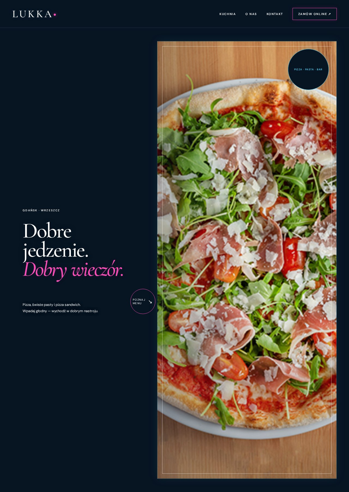

Lukka Gdańsk

01Idea i koncepcja
Włoska kuchnia jako punkt wyjścia do strony restauracji w Gdańsku. Projekt ma pomóc wybrać danie, poznać lokal i przejść do zamówienia.
02Projekt i development
Prezentacja kuchni i lokalu, informacje dla gości oraz przejście do zewnętrznego serwisu zamówień. Eksperyment z interaktywną pizzą jest osobnym prototypem, a nie potwierdzoną funkcją wersji produkcyjnej.
03Strategia marketingowa
Proponowany kierunek: kampanie wokół konkretnych dań i lokalnych okazji. Osobno mierzyć przejścia do menu, kliknięcia telefonu i wyjścia do serwisu zamówień.
04SEO i możliwości rozwoju
Proponowane usprawnienia: osobna, indeksowalna strona menu; spójne dane adresowe; poprawne dane Restaurant; optymalizacja zdjęć potraw i zapytań lokalnych. Wyniki wymagają pomiaru w Search Console.